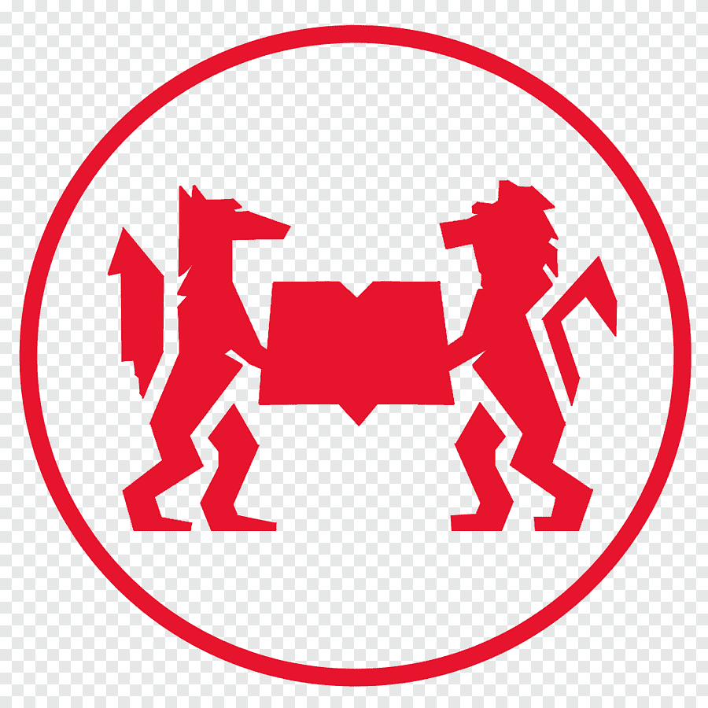

GeoTag Mapping

I love interactive maps!
Mapping Sciences Po
This map highlights the Sciences Po College Universitaire in Paris and my favorite coffee shop during my semester abroad.
Try It Yourself